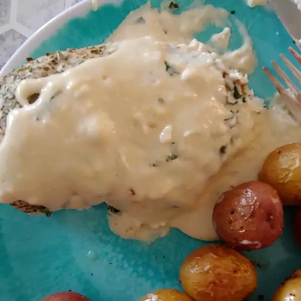

BBQ Chicken Breast

Description
An easy and very tasty way to perk up your mid-week menu. Very creamy and a sure win for garlic lovers. Goes great over grilled or baked chicken breasts.
Ingredients
- 4 skinless, boneless chicken breast halves
- 1 teaspoon dried oregano
- 1 teaspoon dried basil
- ½ teaspoon salt
- 1 tablespoon all-purpose flour
Steps
- Preheat an outdoor grill for medium-high heat and lightly oil the grate.
- Season chicken breasts with oregano, basil, salt, and black pepper.
- Cook the chicken breasts on preheated grill until no longer pink in the center and the juices run clear, 5 to 6 minutes per side. An instant-read thermometer inserted into the center should read at least 165 degrees F (74 degrees C).
- Plate the chicken breasts. Spoon sauce over the chicken. Serve extra sauce on the side.